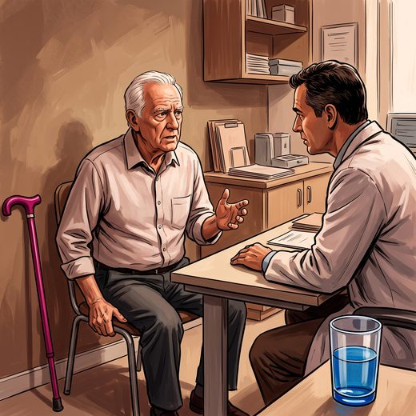

Consulta rápida à beira do leito
Condutas, doses e interações.
Referências da aula · 10
- Horak FB. Postural orientation and equilibrium: what do we need to know about neural control of balance to prevent falls? Age Ageing. 2006;35(Suppl 2):ii7-ii11. PMID 16926210. doi:10.1093/ageing/afl077.PubMedDOI
- Agrawal Y, Van de Berg R, Wuyts F, Walther L, Magnusson M, Oh E, et al. Presbyvestibulopathy: diagnostic criteria. Consensus document of the Classification Committee of the Bárány Society. J Vestib Res. 2019;29(4):161-70. PMID 31306146. doi:10.3233/VES-190672.PubMedDOI
- Agrawal Y, Carey JP, Della Santina CC, Schubert MC, Minor LB. Disorders of balance and vestibular function in US adults: data from the National Health and Nutrition Examination Survey, 2001-2004. Arch Intern Med. 2009;169(10):938-44. PMID 19468085. doi:10.1001/archinternmed.2009.66.PubMedDOI
- Richardson JK, Hurvitz EA. Peripheral neuropathy: a true risk factor for falls. J Gerontol A Biol Sci Med Sci. 1995;50(4):M211-5. PMID 7614243. doi:10.1093/gerona/50a.4.m211.PubMedDOI
- White J, Maier AB, Iacobaccio L, Iseli R. Foot problems in older adults presenting to a falls and balance clinic. Gerontology. 2024;70(7):732-40. PMID 38697042. doi:10.1159/000539160.PubMedDOI
- Cox H, Frith J. Best practice assessment and management of benign paroxysmal positional vertigo in older adults. Age Ageing. 2025;54(8):afaf225. PMID 40819291. doi:10.1093/ageing/afaf225.PubMedDOI
- Cruz-Jentoft AJ, Bahat G, Bauer J, Boirie Y, Bruyère O, Cederholm T, et al. Sarcopenia: revised European consensus on definition and diagnosis. Age Ageing. 2019;48(1):16-31. PMID 30312372. doi:10.1093/ageing/afy169.PubMedDOI
- Haran MJ, Cameron ID, Ivers RQ, Simpson JM, Lee BB, Tanzer M, et al. Effect on falls of providing single lens distance vision glasses to multifocal glasses wearers: VISIBLE randomised controlled trial. BMJ. 2010;340:c2265. PMID 20501583. doi:10.1136/bmj.c2265.PubMedDOI
- Harwood RH, Foss AJE, Osborn F, Gregson RM, Zaman A, Masud T. Falls and health status in elderly women following first eye cataract surgery: a randomised controlled trial. Br J Ophthalmol. 2005;89(1):53-9. PMID 15615747. doi:10.1136/bjo.2004.049478.PubMedDOI
- Montero-Odasso M, van der Velde N, Martin FC, Petrovic M, Tan MP, Ryg J, et al. World guidelines for falls prevention and management for older adults: a global initiative. Age Ageing. 2022;51(9):afac205. PMID 36178003. doi:10.1093/ageing/afac205.PubMedDOI
Documentos oficiais
Leis e publicações do Ministério da Saúde sobre o cuidado da pessoa idosa, de acesso livre.
Abrir os documentos